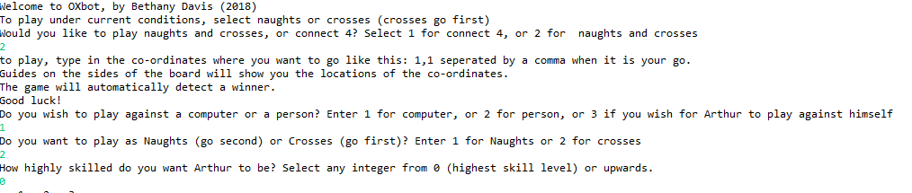
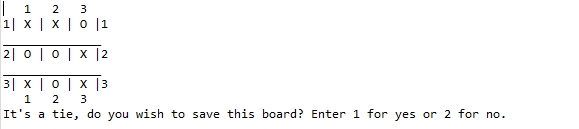
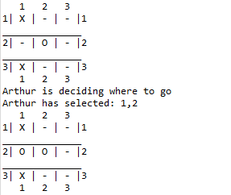
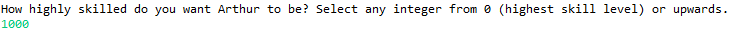
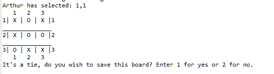
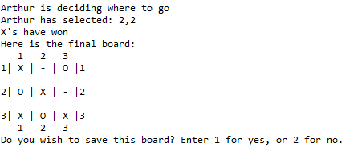
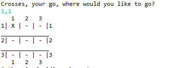
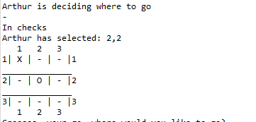

0xBot was a simple decision tree type AI. It was my first attempt ever at making an AI of any sort, and I chose Naughts and Crosses as a
game due to its simplicity, and the fact that a winning strategy is extremely easy to understand (if harder to program at length). I’d also
hoped to scale it up in the fullness of time to include other games, such as chess and 4 in a row/connect 4, however, I never managed to add
this, although there exists a stub of code for connect 4.
A game of naughts and crosses against Arthur
Why I made it
Having decided I wanted to pursue a career in game development at the end of my first year, I thought I should get a head start on having a go at AI.
While what I chose to write wasn’t overly complicated, I thought it would be a good way to get my feet wet. I was also somewhat
fascinated by pattern matching and console interfaces, so it was a good excuse to have a first go at AI, while also improving my
abilities in making a robust console application which could avoid errors with unexpected input. Additionally, this was written during the
holidays between year 1 and year 2, so it functioned as a refresher for programming.
How it works
The console portion of the application allows a user to set up and begin a game of naughts and crosses (it also allows you to select
connect 4, however, this is inaccessible at the moment, and most likely forever), by selecting a game against another user, a computer, or
for the computer to play a match against itself.
 The console interface
The game part of the application checks for win states (i.e. three Xs or 0s in a row in
any direction), and breaks the game loop if one is found. If the board is filled up and no win is found in the final state, it pronounces a
tie and prompts the user to save the board (another feature I couldn’t get working in the time I had).
A tie
The AI portion of the program follows
a set of if statements to try to work out what to do, with instructions which include defending against row completion (if two of the opposing
characters are found going in either direction), and then following a winning strategy.
The AI defends
Additionally, the program included provisions for some
chance. By setting a value at launch, the AI has a 1 in x chance of selecting a good move that I’d pre-programmed (which could at least guarantee
a draw in any state). By setting it as 0, the AI will always choose the pre-programmed move. By setting it as higher values, such as 4-5, the
AI begins selecting random squares. This was a rudimentary way of including some chance, however, due to the small space of the board, it actually
works quite well, and has a reasonable chance of choosing a good move anyway.
Selecting probability
The AI tying in spite of low odds
The AI winning a match
Observations
It's nice coming back to this project and seeing that it works basically as well as I remember. While there are a few bugs, it’s interesting to see
just how much I’d managed to defend against, especially on the string entry.
String entry
Also, looking back at some of the classes, I find it interesting that while on the one hand, the naming conventions aren’t great, there’s
consistency, and some of the names are amusing, if a little hard to read, for example, the AI which I’d nicknamed “Arthur” existed in a class
also called Arthur. At the time, I don’t remember it being particularly hard to read, but looking back on my old classes to check everything
through, I was confused with what I was supposed to look at. I think similar to Astron, it's another case of looking
back on old code after many more years of experience.
How successful has it been?
In spite of a few things I’d like to go back and change, I would say it’s definitely achieved its goals. As a simple console program designed
to play a short game well, it meets the criteria. The ascii is clear in the console, the AI is responsive, and the program itself seems to
have a little personality to it with some of the odd conventions I was following at the time (part of why I’m loathe to edit it).
Some of the more unusual printouts
Unfortunately I never added connect 4 or chess, and now that I’ve moved on to bigger (at least bigger than connect 4)
AI projects, I don’t feel the urge to go back.
What would I do differently if I started over?
Looking back at the code, I’d have structured it far better, and given the classes more sensible names. I’d also have made the AI more modular,
and given it behaviour types to follow, rather than just specific moves, for example, a defensive archetype, which opens with strong moves, and
only looks to defend later, or an attacking archetype, which naively looks to set up 2 in a row patterns to then complete without paying attention to strategy, then
interspersing these with random values, and differing degrees of each other. Also, something I only came across when researching A* for my
year 3 dissertation, I’d have used a program which re-wrote the console every frame, rather than printing the line below.
I don’t know how much benefit there is to that from a UI perspective, but it’s a feature I want to explore more, and part of my wanting to make a full
ASCII renderer for a game at some point in the future.
How I've been able to use it
Practically, I’ve used almost none of the design concepts, and I’ve programmed nothing like it since. There also isn’t much call for the sort of
simplistic AI I used in this outside of the likes of an extremely basic chat bot. What I did learn from the project however, was that
AI in games is very approachable. While I didn’t do any AI work in year 2, or much in year 3, it was certainly something that carried over into my year
4 project, and I found myself unintimidated by the scale of it at all, which give or take, is what I wanted from this project when I started it.